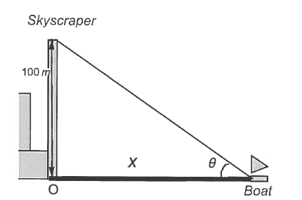

A boat sails directly toward a 100-meter skyscraper that stands on the edge of a
harbor. The angular size \(\theta \) of the building is the angle formed by lines from the top
and bottom of the building to the observer on the boat (see figure below).

(a)
Express the angle \(\theta \) as the function of \(x\), the distance of the boat from the
building.
(b)
Find the angular size, \(\theta \), when the boat is \(x=100\sqrt {3}\)m from the building.